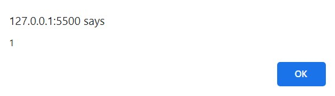
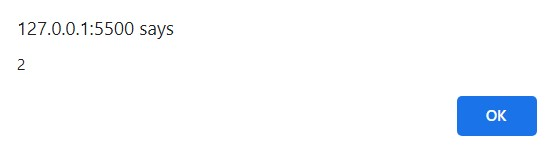
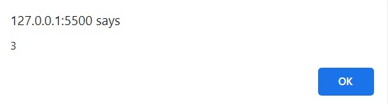
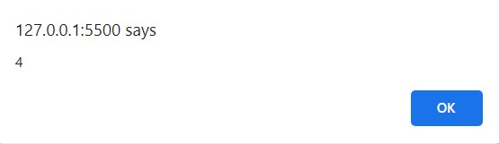
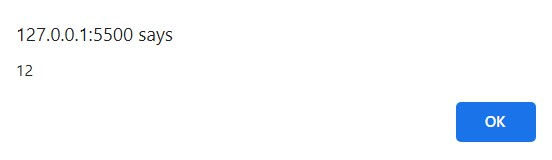
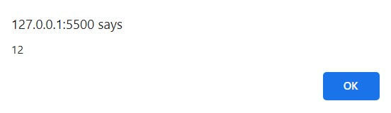

Closure
Q1. function counter(){
var counter = 0;
function IncreaseCounter() {
return counter += 1;
};
return IncreaseCounter;
}
var counter = counter();
alert(counter());
alert(counter());
alert(counter());
alert(counter());
Ans.
 
 
Q2. let count = 0;
(function () {
if (count === 0) {
let count = 1;
console.log(count); // What is logged?
}
console.log(count); // What is logged?
})();
Ans. First logged will be 1 because count is redeclaring inside IIFE and second logged will be 0
because count is global variable
Q3. for (var i = 0; i < 3; i++) {
setTimeout(function log() {
console.log(i); // What is logged?
}, 1000);
}
Ans. 3 will print three times
Q4. Write a code to calculate area of a rectangle using inner function. In this case outer function
should accept parameter length and inner function should accept parameter breadth.
Ans. function length(L){
let a ;
function breadth(B)
{
a=L*B
console.log(a)
}
breadth(5)
}
length(5)
Q5. Take a variable in outer function and create an inner function to increase the counter every time it
is called
Ans. function out()
{
var count = 0;
function inner(){
return count += 1
}
return inner
}
var counter = out()
console.log(counter());
console.log(counter());
console.log(counter());
Q6. Print Output
var a = 12;
(function () {
alert(a);
})();
Ans.
 Q7. var a = 10;
var x = (function () {
var a = 12;
return function () {
alert(a);
};
})();
x();
Ans.

Q8. var globalVar = ""xyz"";
(function outerFunc(outerArg) {
var outerVar = 'a';
(function innerFunc(innerArg) {
var innerVar = 'b';
console.log(
"outerArg = "" + outerArg + "\n" +
"innerArg = "" + innerArg + "\n" +
"outerVar = "" + outerVar + "\n" +
"innerVar = "" + innerVar + "\n" +
"globalVar = "" + globalVar);
})(456);
})(123);
Ans. outerArg =123
innerArg =456
outerVar =a
innerVar =b
globalVar =xyz
Q7. var a = 10;
var x = (function () {
var a = 12;
return function () {
alert(a);
};
})();
x();
Ans.

Q8. var globalVar = ""xyz"";
(function outerFunc(outerArg) {
var outerVar = 'a';
(function innerFunc(innerArg) {
var innerVar = 'b';
console.log(
"outerArg = "" + outerArg + "\n" +
"innerArg = "" + innerArg + "\n" +
"outerVar = "" + outerVar + "\n" +
"innerVar = "" + innerVar + "\n" +
"globalVar = "" + globalVar);
})(456);
})(123);
Ans. outerArg =123
innerArg =456
outerVar =a
innerVar =b
globalVar =xyz